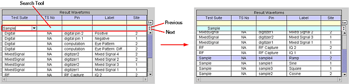
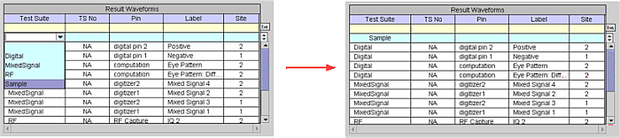
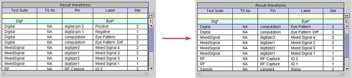
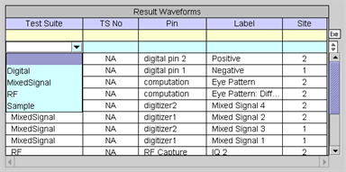
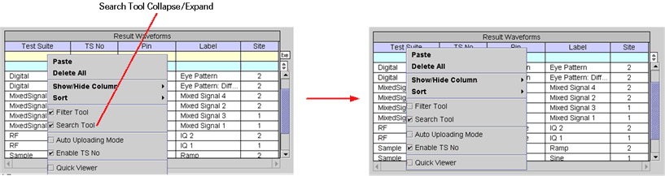

Search Tool
You can search for a specified row of the Waveform Navigator Tool (WNT) table using the search function. You simply input a string in the search row under the table heading of choice by typing it in or selecting it from the drop down list, then clicking the Search Previous (upward triangle) or Search Next button (downward triangle) on the right side of the search tool above the scroll bar. Then, the row found during the search will be highlighted as shown in the following example.


You can also perform a search by inputting strings in multiple columns of the Search Tool. In this case, the rows of the table will be searched by the conjunction (AND) of the strings as shown in the following example.

To clear the Search Tool, click in the cell that contains a string, then either click the right mouse button and select the "blank" row from the drop down list as shown below, or simply click the Previous or Next button.

The Search Tool can be collapsed by clicking the right mouse button, without a waveform selected, then clearing the Search Tool check box as shown in the following example.
